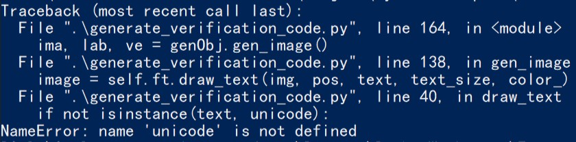

1. 实验题目
基于RNN——LSTM+CTC的注册码识别实验
2. 实验过程
本次实验一共产生了三个文件
- generate_verification_code.py：用于产生训练集、验证集、测试集，也就是产生大量验证码
- train_model.py：训练模型
- predict_test.py：用训练好的模型来识别新输入的验证码
2.1 产生验证码
本次实验产生验证码的方法与上次直接使用captcha库产生验证码的实验不同，本次使用的是freetype的方法。
对应文件：generate_verification_code.py：
2.1.1 首先导入所需要的包
1 | import string |
其中：
string在产生验证码内容时会用到，用它来控制产生的验证码包含哪些内容，比如数字、大写字母、小写字母
freetype用于对给定的字符产生相应的图片
cv2是opencv在python中包的名字，本次实验为了加大难度，使用freetype产生完一张验证码图片后，可以在这张图片的基础之上再加上高斯噪声，这样能加大实验模型的训练难度
多提一句，当产生的验证码中有噪声时，同样也可以使用opencv的均值模糊、高斯模糊等方法来降低噪声，总之，opencv是一个非常强大的计算机视觉库，它能对图片加噪，也能去噪
random库用于产生随机数，因为本实验要求验证码的长度是不确定的
2.1.2 定义put_chinese_text类
put_chinese_text类用于将某一个串字符“画”到图上去
1 | class put_chinese_text(object): |
2.1.3 定义generateVerificationCode类
generateVerificationCode类用于产生验证码，具体代码如下
1 | class generateVerificationCode(object): |
首先看__init__()函数，它一共有5个参数，分别如下：
- width：设置产生的验证码图片的宽
- height：设置产生的验证码图片的高
- char_max_size：设置产生的验证码最多的字符个数， 我这里为了训练速度快一些设成了5
- characters：设置验证码中字符串的组成，我的代码中设置只产生了数字，可以讲它改为
string.digits + string.ascii_uppercase + string.ascii_lowercase，这样就可以产生数字、大写字母、小写字母混合的验证码
再看gen_verification_code()函数，它一共有3各参数，分别如下：
- is_random：设置验证码的长度是否随机，默认是
False，此时产生的验证码为定长验证码，长度为char_max_size - batch_size：设置一次产生验证码的张数，例如产生一个batch的训练集时，可以用于指定batch_size
需要特别说明的是，第31行代码使用numpy产生一个shape为[height, width, 3]的矩阵，相当于是生成一张图片，但图片上什么信息都没有，待会调用put_chinese_text类中的方法来将随机字符串text中的内容“画”上去
color_变量用于设置“画”验证码时验证码上的字符颜色，我这里设置成白色了，pos标量用于设置“画”验证码的起点，text_size用于设置验证码中字符的字体大小
参数设置好后，再调用put_chinese_text类中的draw_text()方法来“画”验证码，画好之后的图赋值给image变量
gen_verification_code()函数最后返回的变量一共三个，分别如下：
- X：shape=[batch_size, width, height]，产生的验证码的矩阵形式
- text_list：一个长度为batch_size的列表，每个元素对应每张图片上的字符串
- Y：它与text_list的意义相同，只是形式不同，它是text_list的
one-hot编码形式
最后，来测试一下函数的执行情况
为了方便查看，我将batch_size设为3，将上面代码的39-43行的打印信息代码的注释打开，再执行下方的代码
1 | if __name__ == '__main__': |
代码中的4-5行使用opencv显示了验证码的图像
结果如下：


除此之外，我还定义了一个生成测试集的gen_test_verification_code()函数，它能够方便的生成100（默认）张图片，保存在你指定的目录dir下，在做测试的时候可以使用opencv库读入他们并导入训练好的模型来做测试，后面测试模型时会用到，代码如下：
1 | def gen_test_verification_code(self, dir, is_random=False, num=100): |
2.2 训练模型
本次实验采用的网络结构为RNN（循环神经网络）中的LSTM（长短时记忆网络），采用CTC（联结主义时间分类器 ，Connectionist Temporal Classifier）作为损失函数，它适合于输入特征和输出标签之间对齐关系不确定的时间序列问题，CTC可以自动端到端地同时优化模型参数和对齐切分的边界。
对应文件：train_model.py
首先导入相关的包
1 | from generate_verification_code import * |
2.2.1 定义一些超参数
1 | #图片大小，32 x 256 |
这些超参数在后面用到的时候会陆陆续续提到，这里就不过多解释了，把它放在这里写是因为这些超参数一般都放在文件的头部
2.2.2 关于ctc_loss
上面提到了我们的损失函数是ctc_loss，它在tensorflow中的定义如下：
1 | tf.nn.ctc_loss( |
labels: An
int32SparseTensor，用来传入你训练数据的真实值，要求是int32类型的稀疏矩阵。稀疏矩阵：在矩阵中，若数值为0的元素数目远远多于非0元素的数目，并且非0元素分布没有规律时，则称该矩阵为稀疏矩阵；与之相反，若非0元素数目占大多数时，则称该矩阵为稠密矩阵。（百度百科）
一个稀疏矩阵由三个要素要确定：
indices:二维int64的矩阵，代表非0的坐标点values:二维tensor，代表indice位置的数据值dense_shape:一维，代表稀疏矩阵的大小
举例：
拿上面产生的三张验证码的字符串’196’、‘76924’和‘58407’来举例，他们的
dense tensor形式如下：1
2
3
4> [[1,9,6,0,0]
> [7,6,9,2,4]
> [5,8,4,0,7]]
>>
把他们转换成系数矩阵的形式就像这样：
1
2
3
4> indecs = [[0,0],[0,1],[0,2],[1,0],[1,1],[1,2],[1,3],[1,4],[2,0],[2,1],[2,2],[2,3],[2,4]]
> values = [1,9,6,7,6,9,2,4,5,8,4,0,7]
> dense_shape = [3,5]
>inputs: 3-D
floatTensor，用来传入你模型预测出的结果，要求是一个三维float型的数据结构如果
time_major = False，inputs要求的形状为:[batch_size, max_time, num_classes].如果
time_major = True (默认)，inputs要求的形状为:[max_time, batch_size, num_classes].
sequence_length: 1-D
int32vector, size[batch_size].它表示一个batch中每个输入LSTM网络的数据的序列的长度，例如本实验中都是256格式要求：一维int32类型的向量，内容为[seq_len,…,seq_len]，长度为batch_size
了解完ctc_loss之后，发现需要做如下工作：
稀疏矩阵的编码
我们之前使用generateVerificationCode类中用gen_verification_code()函数产生的数据集，它的返回值中
text_list是序列列表的形式，并不是SparseTensor的形式，所以我们需要有函数来将它转换成SparseTensor形式，代码如下：
1 | #转化一个序列列表为稀疏矩阵 |
系数矩阵的解码
SparseTensor形式的数据是ctc_loss的要求，讲预测值与真实值送进ctc_loss做损失计算，但是最后我们在测试阶段需要看预测的数据对不对，这时需要将SparseTensor形式的数据转换回去（序列列表），代码如下：
1 | def decode_sparse_tensor(sparse_tensor): |
2.2.3 训练数据集的生成
前面已经有生成验证码的函数了，为什么这里还要写生成训练数据集的函数呢?
原因前面已经讨论到了，即使用generateVerificationCode类中用gen_verification_code()函数产生的数据集的label（标签）并不符合ctc_loss的格式要求，上面也只是定义了可以将序列列表的形式的标签转换成SparseTensor的形式标签的函数，还没有调用，现在做的工作是调用上面的函数来生成数据格式符合ctc_loss要求的训练集，代码如下：
1 | # 生成一个训练batch |
这个函数的第9行将验证码的颜色变成了单通道，原因也是我希望训练速度能快一些
函数里面涉及到了很多数据格式的转换，在本实验中的总体的数据流如下：
gen_verification_code()—->[batch_size, seq_len, num_features]
—->LSTM—->[batch_size, seq_len, cell.output_size]—->reshape
—->[batch_size*seq_len, num_hidden]—->affine projection A*W+b
—->[batch_size*seq_len, num_classes]—->reshape
—->[batch_size, seq_len, num_classes]—->transpose
—->[seq_len, batch_size, num_classes]
至于为什么要做这么繁琐的数据转换，下面马上要提到啦
2.2.4 定义LSTM网络模型
整体的网络结构是：输入单元—>64个隐藏单元（循环体）—>12个输出单元
所以在第10行将得到的LSTM输出值reshape成[batch_size\*seq_len, num_hidden]之后，又继续将他们连接到了输出层的12个神经元，最终返回的logits是reshape成[seq_len, batch_size, num_classes]之后的数据
为什么要这样一直reshape？
因为这个返回的logis即将要作为inputs数据被喂送到ctc_loss里面啦，上面已经写到了ctc_loss的inputs需要[max_time, batch_size, num_classes]这样的数据格式
涉及到的超参数：
- num_hidden = 64
- num_layers = 1
所以这个LSTM网络中间循环体的个数是64个，层数是1
1 | def RNN(inputs, seq_len): |
2.2.5 开始训练
在开始训练之前，先定义一个函数来检测待会儿模型预测结果的正确率，并且打印出预测的结果和真实的label
1 | def do_report(): |
接下来看开始写训练的代码
涉及到的超参数：
- epoch：训练的轮数，由前面的
num_epochs = 10000控制，表示最多训练10000轮 - BATCHES：表示一轮训练里batch的数量，本实验中我设置的是10
- BATCH_SIZE：表示每个batch中的验证码个数
- TRAIN_SIZE：表示一个epoch训练下来，一共使用了多少张验证码
1 | if __name__ == '__main__': |
2.3 测试模型
对应文件：predict_test.py
首先导入相关的包
1 | # 首先导入需要的库 |
调用gen_test_verification_code()函数产生100张验证码
1 | # 设置产生测试集文件夹的名字 |
生成验证码后可以打开TestingSet目录查看看生成的验证码

虽然希望产生的是100张验证码，但是可能在产生的过程中会有重名的情况，这样就把之前的验证码覆盖掉了，所以最终产生的测试集数量可能会小于100
gen_test_verification_code()函数生成的验证码使用该验证码里面的字符命名，这样可以方便读入验证码的时候一起读入他们的label
下方的代码是使用opencv读入刚才产生的验证码
1 | # 获取这个目录里的所有图片名字列表 |
跟之前产生训练集一样，需要对读入的图片的数据做相应的数据变换（opencv读入后的数据格式为numpy的array）
最后产生的数据保存在test_x、test_targets和test_seq_len中
- test_x：shape=[num, width, height]
- test_targets：稀疏矩阵形式的label
- test_seq_len：LSTM网络的时间序列长度，也就是每张图片的长度
测试数据产生完后，接下来开始测试训练好的模型
1 | # 定义一些placeholder作为输入数据的入口 |
定义会话开始测试
1 | with tf.Session() as session: |
我的测试结果：
1 | Generating.........(100/100) |
2.4 遇到的问题
unicode编码报错：NameError: name 'unicode' is not defined

错误原因：在python3中才会报此错误，所以应该是ython版本不兼容所致，python3将unicode改为str了
解决办法：如果你使用的是python3，将unicode改为str即可解决
参考资料：
Tensorflow官网(可能需要科学上网)
http://ilovin.me/2017-04-23/tensorflow-lstm-ctc-input-output/